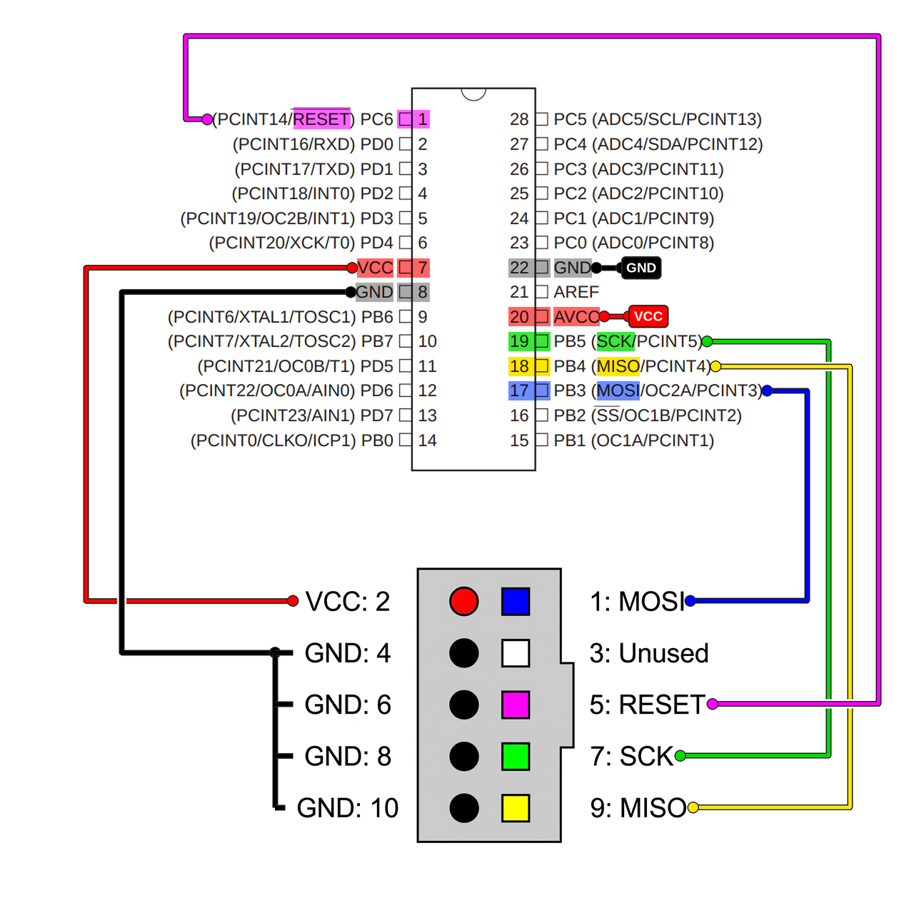
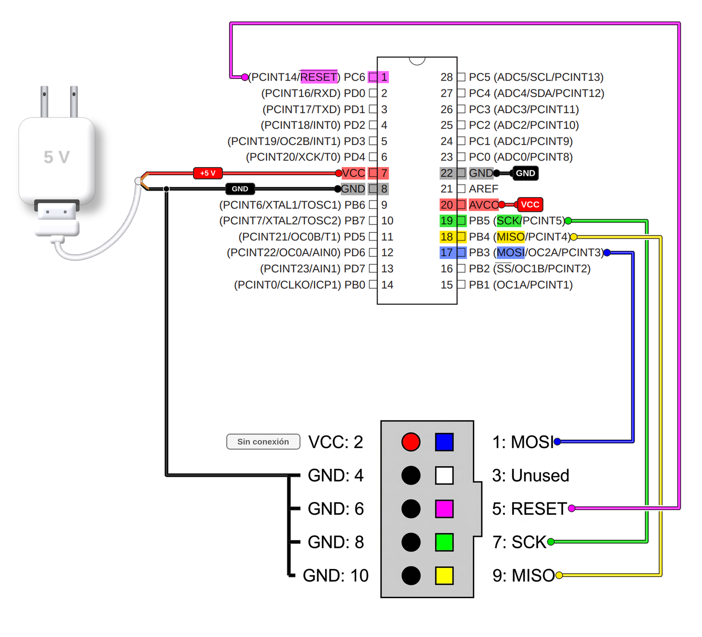
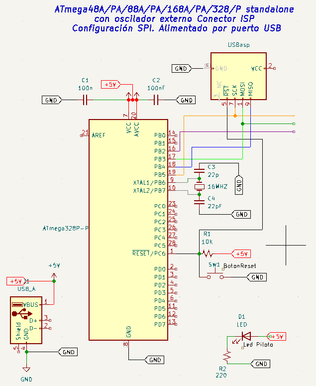

CONEXIÓN DEL PROGRAMADOR ISP USBasp POR BUS SERIAL SPI
INTRODUCCIÓN
La carga del firmaware en el microcontrolador y la depuración la haremos a través del programador ICSP USBasp.
USBasp es un programador de hardware libre y de bajo costo para microcontroladores Atmel AVR. Consta simplemente de un ATMega88 o un ATMega8 y un par de componentes pasivos. El programador utiliza un controlador USB basado únicamente en firmware; para Linux y Mac Os no se necesita instalar ningún controlador especial del puerto USB.
USBasp se conecta a la estación de trabajo por USB y al microcontrolador por el bus de comunicación serial SPI (interfaz perifericos serial).El software de programación o flasheo AVRDUDE que utilizamos en este sitio, es compatible con USBasp desde la versión 5.2.
1. CONEXIÓN DEL USBasp A LA PC
El ATmega puede programarse mediante ISP (In-System Programming), es decir sin necesidad de retirar el microcontrolador del circuito. La programación o flasheo se realizar desde la estación de trabajo.
Después de conectar el USBasp al puerto USB de la Raspberry Pi 5 podemos comprobar que el sistema lo reconoce con el comando lsusb:
lsusb
Bus 001 Device 001: ID 1d6b:0002 Linux Foundation 2.0 root hub
Bus 001 Device 002: ID 16c0:05dc Van Ooijen Technische Informatica shared ID for use with libusb
Bus 002 Device 001: ID 1d6b:0003 Linux Foundation 3.0 root hub
Bus 003 Device 001: ID 1d6b:0002 Linux Foundation 2.0 root hub
Bus 003 Device 002: ID 1ea7:0066 SHARKOON Technologies GmbH [Mediatrack Edge Mini Keyboard]
Bus 004 Device 001: ID 1d6b:0003 Linux Foundation 3.0 root hub
La salida muestra los 4 puertos USB disponibles en la estación de trabajo, 2 puertos 2.0 y 2 puertos 3.0:
- Bus 001 Device 001: ID 1d6b:0002 Linux Foundation 2.0 root hub
- Bus 002 Device 001: ID 1d6b:0003 Linux Foundation 3.0 root hub
- Bus 003 Device 001: ID 1d6b:0002 Linux Foundation 2.0 root hub
- Bus 004 Device 001: ID 1d6b:0003 Linux Foundation 3.0 root hub
Además muestra que el sistema reconoce 2 dispositivos conectados por USB
La segunda etiqueta corresponde a un teclado inalámbrico y la primera etiqueta corresponde al USBasp.
La identificación del USBasp es 16c0:05dc, que corresponde a Van Ooijen Technische Informatica shared ID for use with libusb. Es muy común observar una etiqueta con el nombre "Van Ooijen Technische Informatica" (o su sigla VOTI) asociada al dispositivo 16c0:05dc. Lejos de tratarse de un error o de un hardware extraño, esto ocurre porque el creador del USBasp utilizó el identificador de fabricante (Vendor ID) sublicenciado gratuitamente por el ingeniero holandés Wouter van Ooijen para apoyar proyectos de código abierto y evitar los costosos pagos de registro ante la USB-IF. De este modo, la base de datos de Linux lee dicho código asignado y reconoce la firma del licenciante, confirmando así que el programador está correctamente reconocido por el sistema operativo y listo para interactuar con herramientas como AVRDUDE.
Podemos comprobar que el USBasp está correctamente conectado y reconocido por el sistema operativo con el siguiente comando, ponemos también a continuación la salida del comando:
~ $ avrdude -c usbasp -p m88pa
avrdude: AVR device initialized and ready to accept instructions
avrdude: device signature = 0x1e940b (probably m168pa)
avrdude done. Thank you.
2. PROGRAMACIÓN ISP, COMUNICACIÓN SPI E INTERFAZ ICSP.
2.1. Interfaz ICSP
La conexión del USBasp con el microcontrolador se realiza a través de un box header DIP (Dual In-line Package/ Encapsulado de Doble Línea) de 10 pines con un paso estándar de 2.54mm, llamado conector ICSP o más comunmente, ISP el cual se conecta a los respectivos pines del microcontrolador. La conexión utiliza principalmente seis señales del bus de comunicación serial SPI: MISO, MOSI, SCK, RESET, VCC y GND. Se utiizan dos tipos de conectores
El ISP USBasp utiliza un cable ribbon de 10 hilos y termina en un conector hembra; por lo tanto el microcontrolador a programar debe tener adosado un conector macho
El modelo de box header, shrouded header (cabecera) o conector macho recibe el nombre estándar de DC3: un conector de tipo caja con cubierta que tiene un espaciado o paso estándar de 2.54 mm entre pines. Su diseño de "caja" incluye una muesca de guía para evitar que el conector hembra se conecte al revés o desalineado.
El conector hembra es de modelo IDC, una pieza electrónica diseñada para engarzarse directamente a un cable plano de cinta (ribbon cable) sin necesidad de pelar ni soldar los hilos conductores..
El conector hembra también tiene una muesca de polarización o relieve en el centro de uno de sus lados. Esta pestaña encaja perfectamente en la ranura de los conectores macho (DC3), asegurando que el cable nunca se conecte al revés. El pitch es de 2.54 mm (0.1 pulgadas) El paso (pitch) es la distancia que hay entre el centro de un pin y el centro del siguiente.
Para facilitar la identificación de los pines y señales PSI, el conector hembra tiene una punta de flecha en el pin 1 (MOSI)
La mayoría de los programadores USBasp utilizan el siguiente orden de señales en el conector ICSP:

2.2. La programación ISP
Para programar un dispositivo de la serie ATmega48A/PA/88A/PA/168A/PA/328/P con el programador USBasp, usamos el método ISP (In System Programming) y la comunicación serial SPI
La programación ISP (In-System Programming / Programación en el Sistema) es un método o técnica general que permite programar un chip sin tener que retirarlo del circuito o de la placa. Microchip (y luego adoptaron otros fabricantes) introdujo el término ICSP (In-Circuit Serial Programming / Programación Serial en Circuito) para llamar a la interfaz física y al conector de pines que hace posible esa programación ISP.
2.3. La comunicación serial síncrona SPI
El bus SPI (del inglés Serial Peripheral Interface) es un estándar de comunicaciones usado principalmente para la transferencia de información entre circuitos integrados. Al ser un bus de comunicación en serie, los datos se transfieren bit a bit a través de un único canal de comunicación. Para ello debemos conectar seis señales entre el programador y el microcontrolador.
| Pin USBasp | Señal ISP | Pin del ATmega | Bit del Puerto del ATmega | Descripción |
|---|---|---|---|---|
| 1 | MOSI | 17 | PB3 | Datos del programador hacia el microcontrolador. |
| 9 | MISO | 18 | PB4 | Datos del microcontrolador hacia el programador. |
| 7 | SCK | 19 | PB5 | Señal de reloj de la programación SPI. |
| 5 | RESET | 1 | PC6/RESET | Coloca el microcontrolador en modo de programación. |
| 2 | VCC | 7 y 20 | - | Alimentación (+5 V o +3.3 V, según el sistema). |
| 4, 6, 8, 10 | GND | 8 y 22 | - | Tierra (masa). |
Debemos recordar:
- ISP es la función (lo que estamos haciendo: programar el chip dentro del sistema).
- SPI es el protocolo de comunicación (cómo se mueven los bits a través de las líneas de cobre).
- ICSP es la interfaz física (conecta el programador con el microcontrolador)
3. CONEXION USBasp con ATmega48A/PA/88A/PA/168A/PA/328/P
Las conexiones con un AVR standalone de la serie ATmega48A/PA/88A/PA/168A/PA/328/P es como se detala en el grafico siguiente. La alimentación del circuito y del microcontrolador es proporcionada por $V_{CC}$ procedente del USBasp. Esto es sólo conveniente cuando el circuito representa una carga de poco consumo

En circuitos que requieren mayor consumo al que puede proporcioanr el puerto USB de la Raspberry Pi 5, es necesario alimentar el circuito y el microcontrolador con una fuente externa de potencia convceniente. El diagrama pictórico siguiente ilustra esto.

El esquemático de las conexiones entre un programador USBasp y un AVR> de la serie ATmega48A/PA/88A/PA/168A/PA/328/P configurado con circuito mínimo alimentado a través de un puerto USB es el siguiente:

ATmega48A/PA/88A/PA/168A/PA/328/P configurado con circuito mínimo con programador ISP USBasp" class="imagen-centrada">